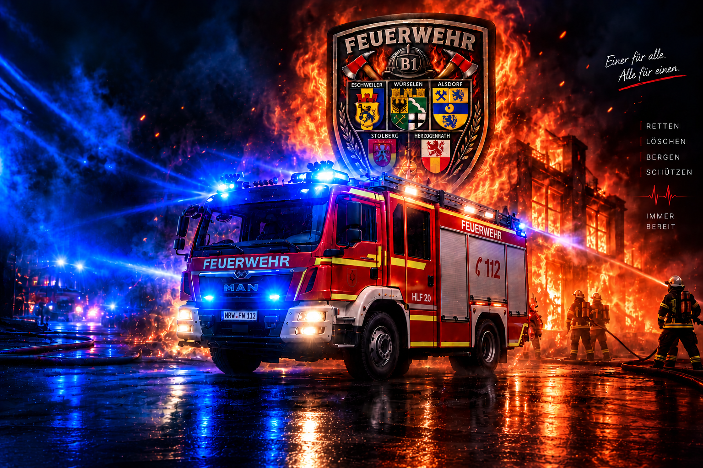

B1 · NRW · EINSATZBEREITDEIN WISSEN.
DEIN WISSEN.
DEIN EINSATZ.
Moderner B1-Lerntrainer mit prüfungsnahen Fragen, vertieften digitalen Lernkarten und direktem Zugriff auf die maßgeblichen Vorschriften.
0%FORTSCHRITT
0/672FRAGEN
–QUOTE
0FEHLER
Ausbildungsbereiche
14 MODULEFragen-Training
Wähle einen Bereich oder trainiere quer durch den gesamten B1-Stoff.
Deep-Dive Lernkarten
0 / 168Jede Karte enthält Kernwissen, Vertiefung, Einsatzpraxis, Gefahren, Prüfungsfokus und Quelle. Tippe die Abschnitte auf, um sie zu öffnen.
Prüfungssimulation
40 zufällige Fragen aus allen Ausbildungsbereichen.
Vorschriften-Center
FwDV, BHKG NRW und zentrale DGUV-Unterlagen. Die App zeigt Lernzusammenfassungen und öffnet zum Nachlesen die amtliche beziehungsweise offizielle Quelle.
Quellenstand: September 2026. Bei DGUV Vorschrift 49 ist die beim zuständigen Unfallversicherungsträger in Kraft gesetzte Fassung maßgeblich. DGUV Regel 105-049 liegt als aktualisierte Fassung Mai 2025 vor.